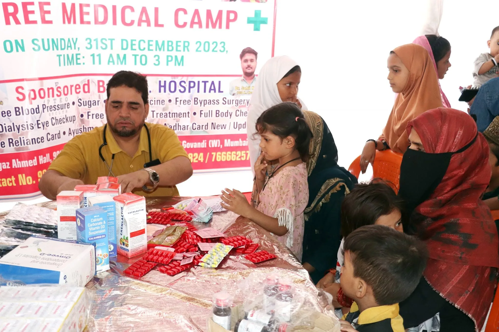
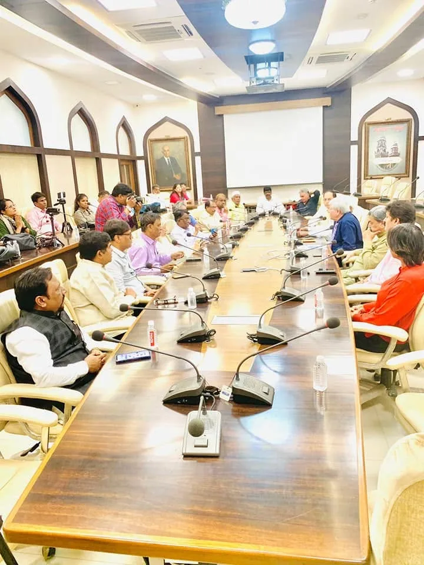
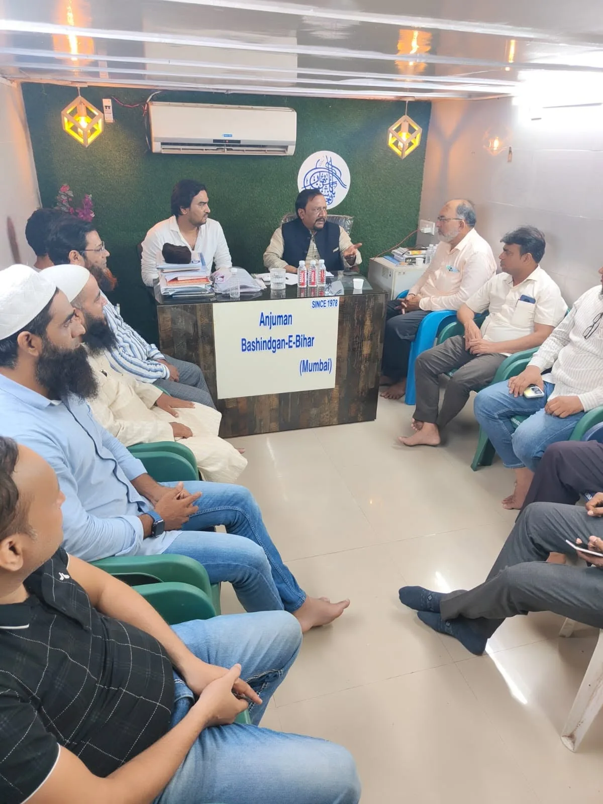

Gallery
Community work in action
A visual record of community programs, assistance activities and initiatives carried out through Anjuman Bashindgan-E-Bihar.






Help us continue community support.
Your contribution can strengthen assistance initiatives for people in genuine need.